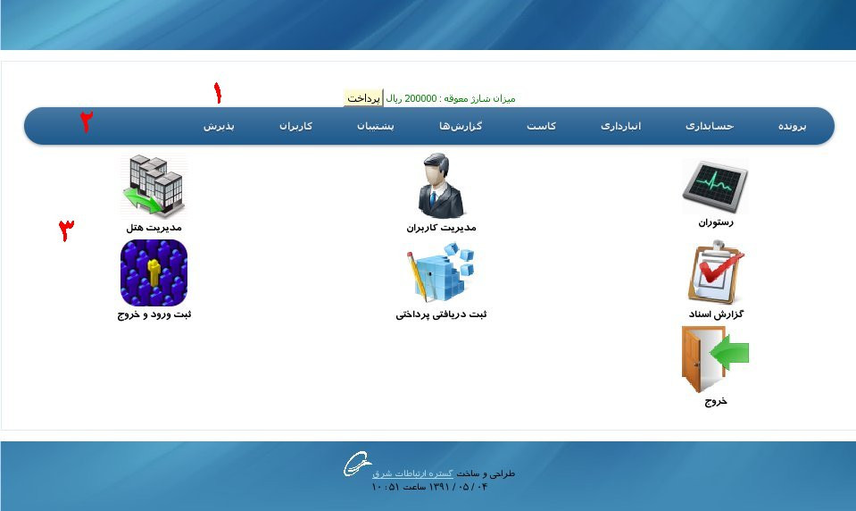
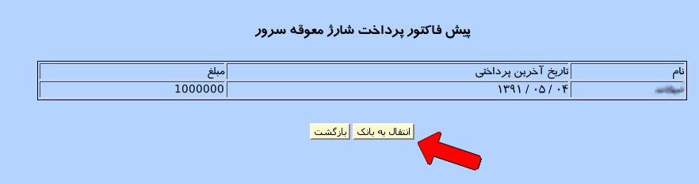

صفحه اصلی سامانه از سه قسمت اصلی تشکیل شده است:
۱-پنل شارژ معوقه
در این قسمت میزان بدهی برای شارژ ماهیانه سرور سامانه نمایش داده می شود.
در این پنل میزان بدهی مربوط به پرداخت شارژ سرور سامانه نمایش داده می شود و امکان پرداخت آنلاین مبلغ وجود دارد.
با کلیک بر روی دکمه پرداخت وارد صفحه پرداخت نقدی می شویم.

در این صفحه نام مشتری و تاریخ آخرین پرداختی و میزان بدهی آن نمایش داده می شود.
با کلیک بر روی دکمه انتقال به بانک وارد درگاه بانک شده و مبلغ مورد نظر وارد می شود.
۲-پنل منو
۱-پرونده:این منو امکان تعریف اطلاعات پایه در نرم افزار را به کاربر می دهد.
۲-حسابداری: این منو شامل امکاناتی برای تعریف حساب ها, عملیات مالی و ... می باشد.
۳-انبارداری: عملیات مربوط به ثبت, ورود, خروج و ... مربوط به انبار در این منو قابل دسترسی است.
۴-کاست: به کمک این منو دسترسی به سیستم قیمت تمام شده (کاست کنترل) مربوط به سامانه می توان شد.
۵-گزارش ها:تمامی گزارش های مورد نیاز کاربر از این منو قابل دسترسی می باشد.
۶-پشتیبان:عملیات پشتیبان گیری و بازگردانی اطلاعات پایگاه داده در این منو انجام می شود.
۷-کاربران:لیست کاربران آنلاین و لیست ورود و خروج کاربران در این منو قابل دسترسی می باشد.
۸-پذیرش:تمامی امکانات مربوط به پذیرش به کمک این منو قابل دسترسی می باشد.
۲-پنل مدیریتی
۳-این پنل شامل امکانات حیاتی مورد نیاز کاربر است که برای سهولت استفاده در این قسمت قرار داده شده است.
۱-صندوق ها:تمامی صندوق های تعریف شده توسط کاربر با آیکن انتخابی کاربر.
۲-مدیریت کاربران:افزودن یا حذف کاربر توسط مدیر و یا تغییر نام کاربری و گذر واژه.
۳-مدیریت هتل:امکان تعریف و تغییر و پاک کردن هتل, امکانات هتل, سیستم رزرواسیون و ...
۴-گزارش اسناد: گزارش کاملی از سندهای ثبت شده.
۵-ثبت دریافتی/پرداختی:تمامی عملیات دریافت و پرداخت از حساب ها.
۶-ثبت ورود و خروج:ثبت ساعت ورود و خروج کاربر با وب کم.
۷-خروج:خروج از سامانه